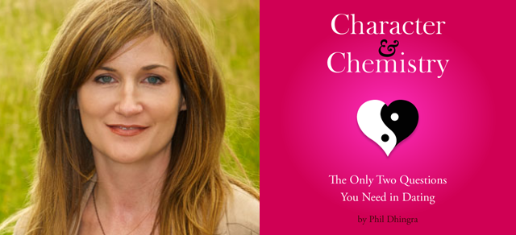

Interview with Dr. Lisa Bobby on the Growing Self Podcast
by phil on Tuesday Sep 25, 2012 10:00 AM
I just spoke with Dr. Lisa Bobby, a Licensed Marriage and Family Therapist from Colorado for her podcast on GrowingSelf.com. We talked about my latest book Character & Chemistry, and you can listen to the full podcast here (scroll down and press play). An abbreviated transcript is available below the fold.

Lisa: I agree with you that character and chemistry are very important. But just for our listeners, can you talk a little bit more just about what you mean when you say "character" and when you say "chemistry".
Phil: So character is defined as trust, respect, responsibility, fairness, caring, and community. And just as an aside, character doesn't necessarily mean whether someone's a good person or not. Because I think fundamentally more than 90% of people are good people--which is huge--and I think that's important to having a positive outlook on life. But character is something that is a little more elusive. I think maybe one-third of people have good character, one-third have decent character, and one-third have character flaws that could definitely be a problem in a relationship.
As for chemistry, I also use an expanded definition of chemistry. It extends beyond the initial 15 minutes of clicking. I like to have a big umbrella definition of chemistry which involves the chemistry you have in conversations, the chemistry you have with your partner when you're at a party, socializing with friends, the physical chemistry, etc.
Chemistry is kind of a mysterious thing. I like chemistry to be a holistic snap judgment. It's the thing you just feel inside. It's like the tza-tza-tzu as they say in Sex and the City or it's the sparks. I think it should ultimately be like in Blink, it's a snap judgment, something you feel intuitively.
Lisa: Well, both of those things are crucial, because I meet people all the time who get in relationships with someone who they are profoundly attracted to, and get this really deep connection, but then get so disappointed because the character isn't there. I've even had people wish they would do something wrong so that they could be mad enough with them to break up. But that chemistry isn't there.
What kinds of things would you like out for if say, that chemistry was there, but the character wasn't?
Phil: I think a red flag is if the topic of conversation is mostly about the other partner's issues and drama. If you just notice a recurring pattern, then that may be a red flag for character, since one of the six pillars of character is fairness. In a fair relationship, there should be roughly equal time to both partners' concerns
Maybe at the time, you might get a thrill because you're an active listener, and the other person is just relieved that someone will hear them out, and so they're in love with you. But try extrapolating that out for six months or a year. Because you're going to have your own issues too.
Lisa: On the flip-side, what would someone look out for if they were going on a first, second, or third date, with someone who was maybe a fantastic person in terms of their character, but not having that chemistry, because people can sort of add things up in their mind, "You know, he has all these great characteristics and qualities, and I want THIS to work," and it can kind of override their feelings. What would you advise someone in that situation?
Phil: I think the bar has to be set pretty high for chemistry in the early phases of dating, because they're supposed to be naturally very exciting. So if you already find yourself kind of bored with conversation within the first two-three weeks, that should raise a very serious red flag. Because chemistry gets revealed very quickly. It's just a rhythm that people have with each other that is instantly recognizable. It's not like someone's appearance is going to change after a couple weeks. Maybe in the first couple dates, your potential partner is nervous, and that makes everything awkward, or maybe there's an awkward situation in which you met each other, but still, if in the early phases, there are lulls that are awkward in the conversation, I would say that maybe that isn't a red flag, maybe it's a purple or an orange flag.
Lisa: So you're saying pay attention to your feelings and honor those feelings. And you know, I think some people just really want to be in a relationship and meet a nice person, and it's very easy to override those feelings. But you're saying, No, give someone an honest chance, and be with them in different environments, but it's really not fair to that person if you're not feeling it. So I think that's great advice.
Thank you so much for talking with me.
Phil: Thank you, this was very enjoyable.